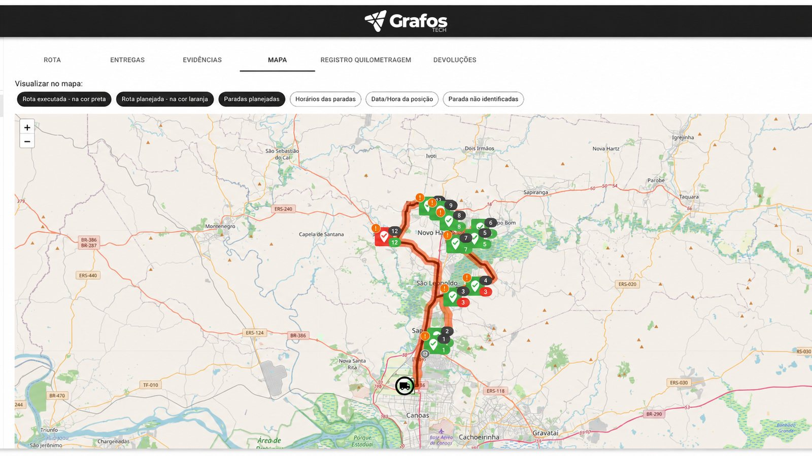
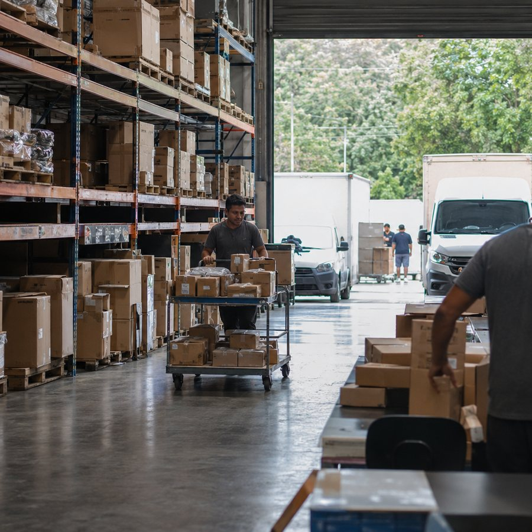
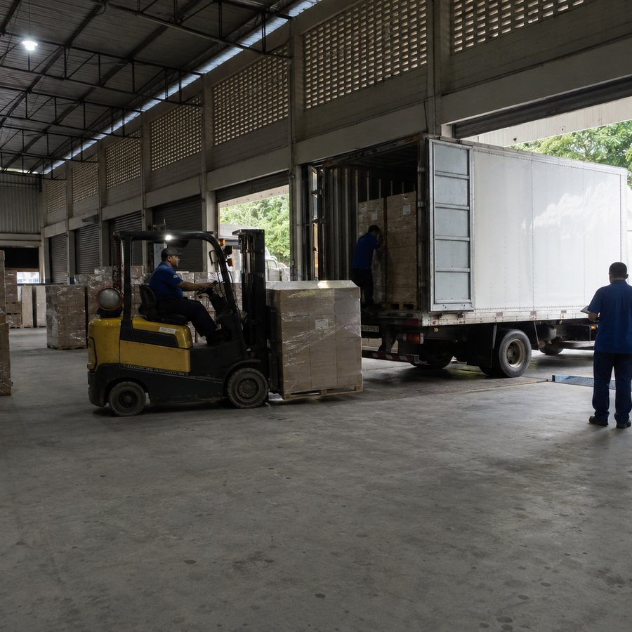
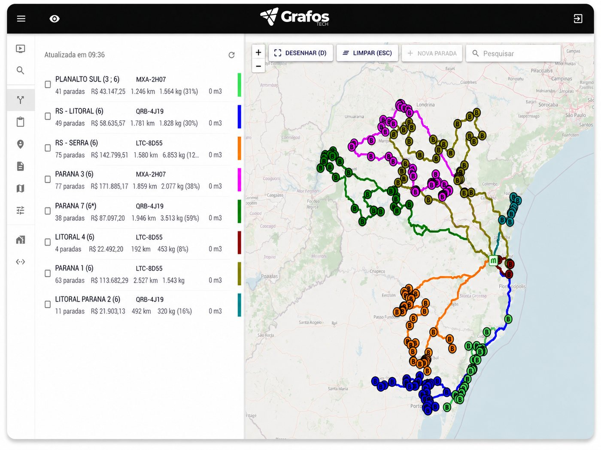

Roteirização
Rotas otimizadas em minutos, com menos quilômetro e menos combustível.
Conhecer ›Gestão simples para operações logísticas complexas.
A Grafos Tech é o software de roteirização e gestão de entregas que reúne planejamento, acompanhamento em tempo real e comprovação digital em um só sistema: simples para o motorista usar, robusto para o gestor confiar.
Feita para distribuidoras e autopeças que querem controle real da operação.
Quando a logística ainda depende de planilha, ligação e da palavra do motorista, o problema não é falta de esforço, é falta de visibilidade. E sem visibilidade vem o custo que ninguém mediu:
A Grafos devolve o controle para quem gere. Quatro frentes, um sistema.
Rotas otimizadas em minutos, com menos quilômetro e menos combustível.
Conhecer ›Acompanhamento em tempo real e comprovante digital de cada entrega.
Conhecer ›A rota do dia na mão do motorista, com comprovação pelo celular.
Conhecer ›Suba as entregas do dia por planilha ou integração com o seu sistema. A Grafos organiza tudo por endereço e janela de entrega.
O algoritmo monta a melhor rota para cada veículo. Cada motorista recebe o roteiro no aplicativo, pronto para sair.
Veja o andamento em tempo real e receba o comprovante digital de cada entrega. Os dados viram indicador para decidir.

A rota roteirizada (passo 2) e a rota executada, com o status de cada parada (passo 3), lado a lado no mesmo mapa.
A plataforma é a mesma. O que muda é o peso de cada módulo na sua operação.



Sistema de logística costuma ser uma de duas coisas: fácil e limitado, ou completo e impossível de usar. A Grafos Tech foi feita para ser as duas coisas certas ao mesmo tempo.
Roteirização é o processo de definir a melhor sequência de paradas de uma rota de entrega para reduzir tempo, distância e custo. Um software de roteirização automatiza esse cálculo considerando pedidos, janelas de entrega e a capacidade de cada veículo.
Sim. Há aplicativo para Android e iOS com a rota do dia, navegação, comprovação de entrega pelo celular e leitura de etiquetas QR Code.
Sim, nos dois casos. A plataforma controla rotas, comprovação de entregas e prestação de contas tanto para frota própria quanto terceirizada.
A implantação é rápida por causa da simplicidade da interface. O tempo exato depende do volume de veículos e das integrações. Podemos estimar isso na demonstração.
Pelo painel da Grafos, com o status de cada rota e cada entrega atualizado conforme o motorista avança, além dos comprovantes coletados no aplicativo.
O investimento depende do tamanho da operação: número de veículos, volume de entregas por dia e módulos contratados. Por isso não trabalhamos com tabela fechada. Na demonstração levantamos esses dados e apresentamos a proposta dimensionada para a sua realidade, sem surpresa depois. Agende a demonstração.
Agende uma demonstração e descubra quanto a sua logística pode economizar com rotas otimizadas e entregas sob controle.
Agendar demonstração